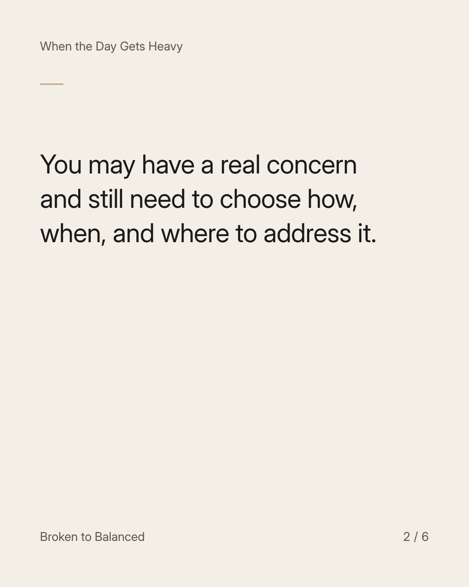
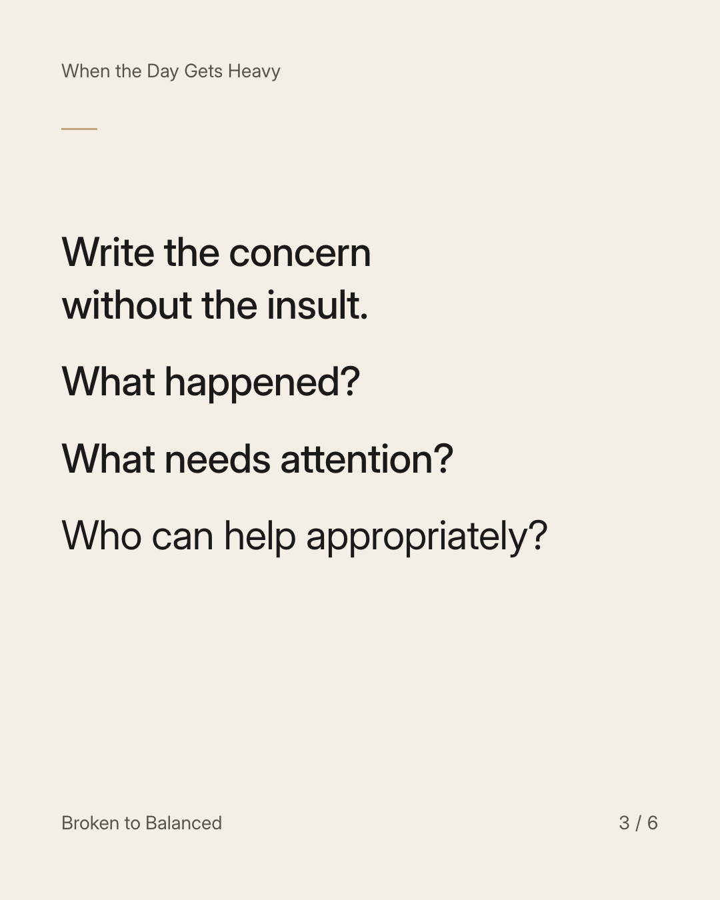
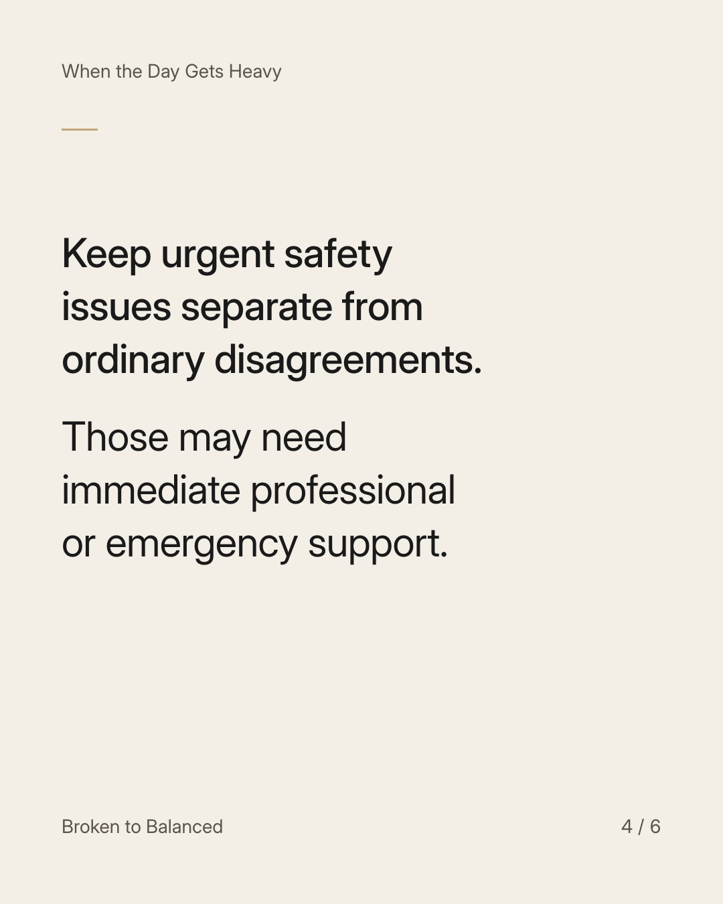
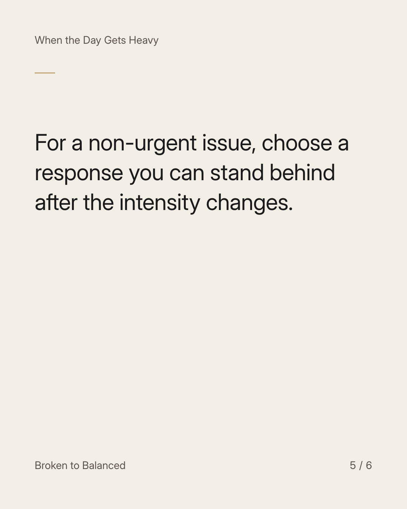
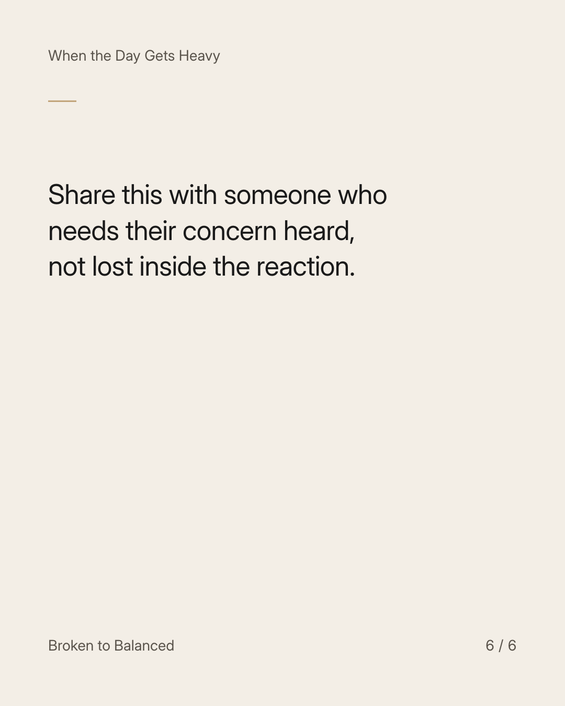

Exact text and accessibility text
Anger can tell you something matters. It cannot make every decision for you.
Slide 1 of 6. Anger can tell you something matters. It cannot make every decision for you.


Exact text and accessibility text
You may have a real concern and still need to choose how, when, and where to address it.
Slide 2 of 6. You may have a real concern and still need to choose how, when, and where to address it.


Exact text and accessibility text
Write the concern without the insult. What happened? What needs attention? Who can help appropriately?
Slide 3 of 6. Write the concern without the insult. What happened? What needs attention? Who can help appropriately?


Exact text and accessibility text
Keep urgent safety issues separate from ordinary disagreements. Those may need immediate professional or emergency support.
Slide 4 of 6. Keep urgent safety issues separate from ordinary disagreements. Those may need immediate professional or emergency support.


Exact text and accessibility text
For a non-urgent issue, choose a response you can stand behind after the intensity changes.
Slide 5 of 6. For a non-urgent issue, choose a response you can stand behind after the intensity changes.


Exact text and accessibility text
Share this with someone who needs their concern heard, not lost inside the reaction.
Slide 6 of 6. Share this with someone who needs their concern heard, not lost inside the reaction.
Exact caption
Plain-text fallback: select and copy the caption.